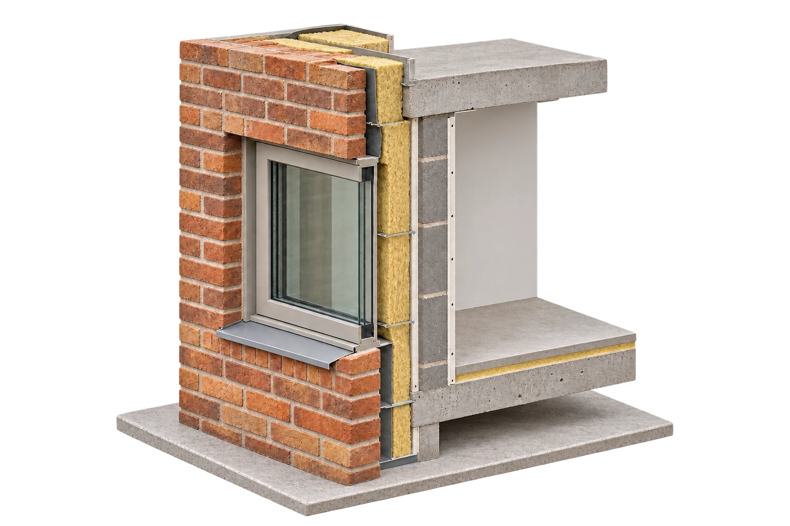
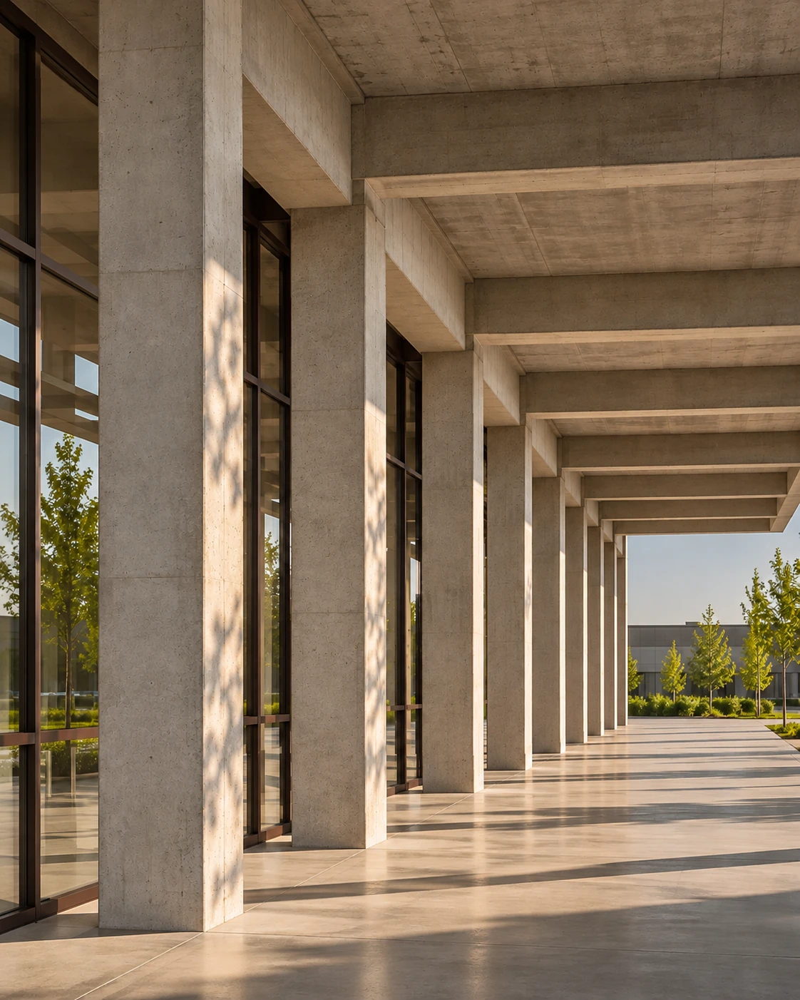
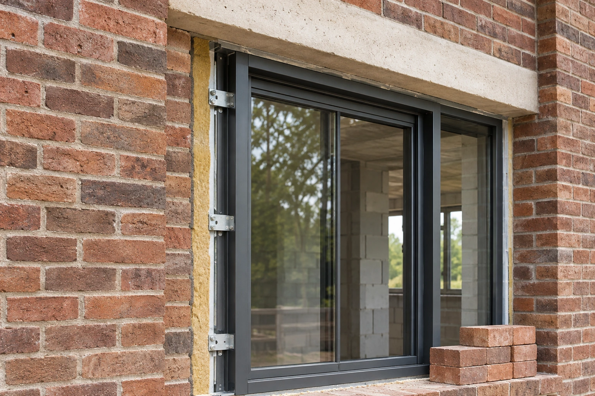
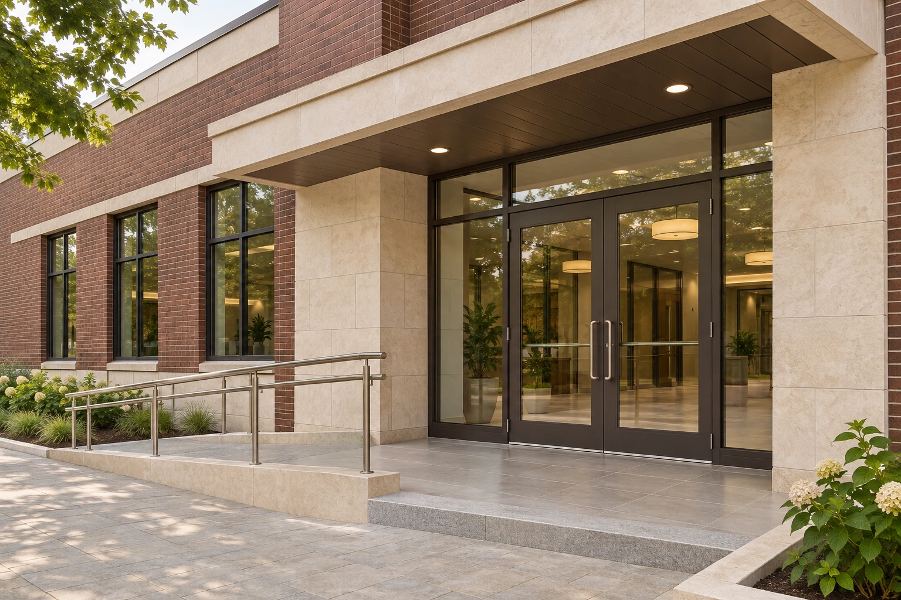

Подрядчик уже работает
Вам нужна техническая проверка со своей стороны и информация о качестве выполнения.
Со стороны заказчика
Проверим качество работ, материалов и документации. Зафиксируем замечания и проследим за их устранением, чтобы Вы могли принимать работы на основе результатов проверки.
Подключимся к конкретному этапу или регулярным проверкам.

Строительный контроль
Вам нужна техническая проверка со своей стороны и информация о качестве выполнения.
Нужно проверить то, что затем закроют другими конструкциями или отделкой.
Требуется разобраться с выполненными объёмами, документами и замечаниями.
Нужна проверка конкретного участка и понятное описание обнаруженных несоответствий.


Состав работ
Проверим документы на материалы, сведения о качестве и порядок их приёмки на площадке.
Соответствие проектным решениям и технологии на согласованных этапах.
Конструкции и элементы, доступ к которым будет ограничен после следующих работ.

Выполненные объёмы и документацию для приёмки, если это входит в задачу.
Конкретные проверки определяем по проекту и стадии строительства. Одного выезда недостаточно, чтобы проверить всё, что выполнялось ранее и уже скрыто.

Для вопроса, который можно оценить в рамках согласованного выезда.
Для контроля по этапам и ключевым операциям.
Объём присутствия и отчётность определяем под ход строительства.
Первый этап
Уточняем стадию и рассматриваем проект, доступные документы и вопросы заказчика.
Второй этап
Определяем участки, контрольные точки, периодичность и отчётность.

Третий этап
Оформляем выявленные замечания и сообщаем о вопросах, требующих решения.

Четвёртый этап
Проверяем устранение замечаний и участвуем в приёмке порученных этапов.
Перед первым обращением
Если Вашей ситуации здесь нет, обсудим её отдельно.
Можно обсудить проверку конкретного этапа или вопроса. До выезда определим, на какие вопросы она позволит ответить и какие материалы нужны.
Контроль сосредоточен на качестве, соответствии работ и подтверждающих документах. Управление строительством дополнительно включает организацию участников, графиков и взаимодействия по проекту.
Да, сначала нужно понять, что доступно для проверки. Если вопрос требует исследования дефектов, причин или стоимости, может подойти строительная экспертиза.
Начнём с Вашей задачи
Расскажите об объекте, стадии строительства и работах, которые вызывают вопросы. Приложите документы или фотографии, если они есть. Мы предложим состав проверки и формат участия.